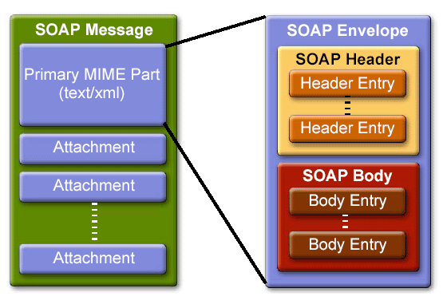

- SOAP API for JAVA (SAAJ)
- SOAP API for JAVA (SAAJ)
Uma mensagem SOAP é um documento XML
designado por envelope.
O cabeçalho (header) permite adicionar extensões à mensagem, permitindo assim a composição de protocolos adicionais para a segurança, por exemplo.
O corpo (body) contém os dados de negócio da mensagem ou então o elemento de falha (fault) com informação de erro.
Os documentos seguintes são exemplos de mensagens SOAP correspondentes a um par pedido-resposta.
<soapenv:Envelope xmlns:soapenv="http://schemas.xmlsoap.org/soap/envelope/"
xmlns:xsd="http://www.w3.org/2001/XMLSchema"
xmlns:ns1="urn:hello">
<soapenv:Body>
<ns1:sayHello>
<ns1:name>friend</ns1:name>
</ns1:sayHello>
</soapenv:Body>
</soapenv:Envelope>
<soapenv:Envelope xmlns:soapenv="http://schemas.xmlsoap.org/soap/envelope/"
xmlns:xsd="http://www.w3.org/2001/XMLSchema"
xmlns:ns1="urn:hello">
<soapenv:Body>
<ns1:sayHelloResponse>
<ns1:return>Hello friend!</ns1:return>
</ns1:sayHelloResponse>
</soapenv:Body>
</soapenv:Envelope>
A SAAJ (SOAP with Attachments API for Java) é uma biblioteca que estende o XML DOM, adaptando-o para o SOAP, fornecendo métodos específicos para tratar as mensagens.
Na biblioteca SAAJ, uma mensagem SOAP tem a seguinte estrutura de objetos:

A SOAPMessage contém várias partes.
A primeira parte é uma SOAPPart, que contém um SOAPEnvelope.
Um SOAPEnvelope contém um SOAPBody e opcionalmente um SOAPHeader.
Dentro destes, podem ser colocados SOAPElement.
Os elementos devem ser sempre especificados com espaço de nomes (namespace), para evitar conflitos.
Os objetos da biblioteca SAAJ estão no pacote javax.xml.soap.*
O código seguinte mostra como se constrói uma mensagem simples com um elemento no corpo.
...
MessageFactory mf = MessageFactory.newInstance();
SOAPMessage soapMessage = mf.createMessage();
SOAPPart soapPart = soapMessage.getSOAPPart();
SOAPEnvelope soapEnvelope = soapPart.getEnvelope();
SOAPBody soapBody = soapEnvelope.getBody();
Name name = soapEnvelope.createName("sayHello", "ns1", "urn:hello");
SOAPElement element = soapBody.addChildElement(name);
element.addTextNode("friend");
...
soapMessage.writeTo(System.out);
System.out.println();
...
Os exemplos seguintes mostram em detalhe como modificar as mensagens SOAP e como enviar mensagem SOAP directamente sem stubs.
- SOAP API for JAVA (SAAJ)Como a base do SOAP é o XML, seguem-se também exemplos das tecnologias base de processamento XML: SAX, DOM, XSD, XPath.
- Processamento de XML em JAVA
© Docentes de Computação Distribuída, Dep. Eng. Informática, Universidade Lusófona